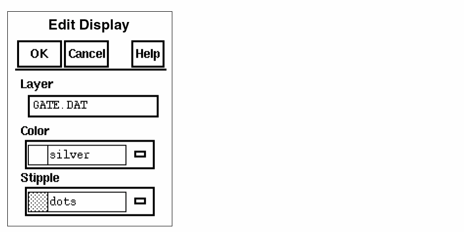

1
Introduction to the Dracula Graphical User Interface
The purpose of this chapter is to provide an overall introduction to the Dracula® graphical user interface which belongs to the Dracula group of physical verification and analysis products.
The Dracula graphical user interface’s executable in the IC 5.1.41 and IC 6.x releases is called draculaInteractive. You can access its functionality in standalone mode or via a DFII session. The Cadence® design framework II software refers to it in its user interface as the Dracula Interactive product. Refer to the previous versions for information on this product’s former names.
The chapter focuses primarily on the following:
- Introducing the Dracula Graphical User Interface
- Using the Dracula Graphical User Interface
- Using the Dracula Graphical User Interface on Layout Data Not in the Database
Introducing the Dracula Graphical User Interface
The graphical user interface is an interactive graphic tool for identifying and analyzing Dracula verification errors. With this tool, you can do the following:
- Display and analyze flat mode, composite mode, and hierarchical mode Design Rule Checker (DRC) errors
- Display and analyze flat mode, composite mode, and cell mode Layout Versus Schematic (LVS) errors
- Display derived layers for all Dracula products (DRC, ERC, LVS, LPE, and PRE)
- Display nets with the highest parasitic capacitance and resistance
- Display the circuit netlist
- Highlight nets and devices
- Cross-display between the layout, netlist, and schematic (Virtuoso® schematic composer window)
- Display the circuit hierarchy
- Display Dracula text
The graphical user interface takes you through each verification error and keeps a record of the errors you have viewed and those you have not. If you need to interrupt an graphical user interface session, you can save the error-viewing status and resume where you left off.
This manual shows you how to display Dracula verification errors using this tool.
Verification Flow
The following chart shows the flow of tasks in the verification process and the product you use for each task. This manual covers the Dracula graphical user interface only.
Using the Dracula Graphical User Interface
The graphical user interface displays the Dracula verification data by reading files in the Dracula run directory and drawing them on the screen. This tool does not add or delete data
from the Cadence® design framework II (DFII) database. This tool can overlay the Dracula data on top of the DFII data.
Prerequisites
Do the following before running the graphical user interface:
- Use the DRE or HTV option when you run Dracula LOGLVS.
- Make sure the results of your Dracula run are in a UNIX directory on the system in which the Cadence software is running.
- Modify the Dracula information files if you moved the Dracula results directory or the netlists from one location to another or one machine to another.
-
Set the
KEEPDATAfunction toDRACULAINTERACTIVEorYESin the Description block of your Dracula rules file.-
The Dracula graphical user interface supports Dracula distributed processing. You need to set the Dracula data path correctly while running the Dracula graphical user interface. To get the Dracula data, you have to set the path to master_node
/drac_linkwhere master_node is the directory from which you ran the Dracula distributed job. -
Dracula distributed processing always runs with
KEEPDATA=YES, regardless of what you specify. For a single CPU job,KEEPDATA=NOworks correctly. For a MULTICPU job, however, specifyingKEEPDATA=NOdoes not delete intermediate files such as.DATafter you run jobs. -
You should not use the
/NEXTcommand when compiling a Dracula rule file for Dracula distributed processing with PDRACULA.
-
The Dracula graphical user interface supports Dracula distributed processing. You need to set the Dracula data path correctly while running the Dracula graphical user interface. To get the Dracula data, you have to set the path to master_node
-
Netlists associated with the LVS section of a Dracula run are not normally stored in the results directory. The graphical user interface program reads the netlist location from the first line of the
CELLTABLE.HTVfile in the Dracula directory. Here is an example of the beginning of aCELLTABLE.HTVfile./usr1/mnt3/your_path/
INV_B netlist
39 43
The first line defines the UNIX path to the netlists. If the UNIX path is a full path, you can move the Dracula results directory to another location on the same machine without any problems.
If the UNIX path is a relative path, you must move the netlists to maintain the same position relative to the Dracula directory. You can also modify the path inside the CELLTABLE.HTV file.
Setting up the DRC, LVS, and LPE Environments for the Dracula Graphical User Interface
Before you work with the Dracula graphical user interface, you must set up its environment. When you first start the graphical user interface, only the Setup commands in the DRC, LVS, and LPE menus are available to you. The rest of the commands are grayed out and cannot be selected.
When starting a new DRC run, you must do the following:
- Start the Cadence software.
- Open your design.
- Select Tools – Dracula Interactive from the design window banner.
- Specify your Dracula directory as follows:
You must run Setup before you can use the other graphical user interface commands.
Displaying Error Flag Information
The graphical user interface uses the default display resource file (DRF) to display DRC error layers. The graphical user interface assigns unique colors to the first 23 flags, then starts again with the first color if the number of verification error layers exceeds 23.
The graphical user interface uses the following stipple patterns to display error flags of a DRC error layer.
Saving and Restoring
The graphical user interface keeps track of the DRC errors you have viewed by assigning errors a status of current, viewed, or unviewed. If you need to interrupt your session, you can store the error status using the Error Status command. See the
Using the Dracula Graphical User Interface Windows
After you run Setup, the Dracula graphical user interface displays several windows that let you control how to display verification errors and parasitic data.
The following figures show the design windows for the graphical user interface.
Using the Dracula Layers Window (DLW)
To control which Dracula layers to display in the graphical user interface window, use the Dracula Layers Window (DLW). The following figure shows a sample DLW.
To make layers visible or invisible, use one of the options from the following table.
Edit Menu of the DLW
The Edit menu in the DLW window displays the following submenus.
Set Valid Layers
To control which layers to display in the DLW and graphical user interface design windows, choose Edit – Set Valid Layers from the DLW banner. This command displays one of the following forms.
Original (Av) installs all Dracula original layers in the DLW.
Original (Nv) removes all Dracula original layers from the DLW.
Connect (Av) installs all Dracula connectivity layers in the DLW.
Connect (Nv) removes all Dracula connectivity layers from the DLW.
Select Layer lets you select layers which you want to be displayed and put in the DLW window. Selecting this menu item displays lists of layers in alphabetic order. The first 200 layers are listed in the first menu. If there are more than 200 layers, the remaining layers are listed in the second menu. The layer you choose is listed in the DLW and displayed in the graphical user interface design window.
Edit Layer Display
To set the graphic display of a layer
- Select a layer in the DLW.
-
Choose Edit – Edit Layer Display from the DLW banner.
The Edit Layer Display command displays the following form.

Color changes the color of the layer you select in the DLW and the graphical user interface design windows.
Stipple changes the stipple pattern of the layer you select in the DLW and the graphical user interface design window.
Save Trapezoid Data
DraculaInteractive lets you save a specified area of a layout window to a trapezoid file. This is a very useful feature for debugging because one can concentrate on a smaller amount of trapezoid data which is possibly corrupted instead of the whole trapezoid data file.
To save trapezoids in a certain layer follow these steps:
A message shows up in the CIW asking you to specify the layer in which you want to save the trapezoids.
Please click left mouse button in DLW to pick an entry layer.
No valid layers are selected.
After you specify the entry layer, the trapezoids within that area are saved as trapezoid files. The prefix of those files are IQ_ (For example, IQ_ACTIVE.DAT, IQ_CONT.DAT, and IQ_MET.DAT). A trapezoid gets saved as long as part of it is in the specified area.
View Trapezoid Data
Lets you view the contents of the files which you had saved using Save Trapezoid Data.
Close Window
Using the Dracula Graphical User Interface Design Window
You use the graphical user interface design window to display your Dracula data.
Using the View DRC Error Window
To cycle through and manage DRC errors in the graphical user interface window, use the View DRC Error window. The following figure shows a sample View DRC Error window.
Commands are described in the “
The current layer appears below the Commands menu button.
Prev displays the previous DRC error you viewed in the graphical user interface design window. In a hierarchical design, this button steps through only the visible HDRC errors of the selected cells.
Fit Current Error fits the current error in the graphical user interface design window.
Next displays the next error in the graphical user interface design window. In a hierarchical design, this button steps through only the visible HDRC errors of the selected cells.
If you click on the Next button after you displayed the last error for a rule, the next rule in the RLW with unviewed errors is displayed.
Next Rule selects the next rule in the RLW.
Explain updates the information in the Explain window with information about the current error in the graphical user interface design window. This button displays the Explain window if it is not displayed already.
- The Dracula error file name
- The error number and total number of errors for the selected Dracula error file
- The DRC rule or comment text
The following figure shows a sample Explain window.
Fix lets you point to a DRC error and mark it as fixed. Fixed errors do not appear in the graphical user interface design window.
Using the Reference Window
To make it easier to orient yourself in the larger graphical user interface window, the Reference window provides a smaller rectangular representation of your entire design. The following figure shows a sample Reference Window.
The following commands are available under the Window button in the Reference window.
Zoom Reference Area lets you specify a rectangular area in the Reference window and zoom to the corresponding area in the graphical user interface design window.
Fit All fits your design in the Reference window.
Close closes the Reference window. To display the Reference window, select Get Reference Window from the DRC, LVS, or LPE menu in the graphical user interface design window or from the Commands menu in the View DRC Errors window
Using the Rules Layer Window (RLW)
The Rules Layer Window lets you select the Dracula error file that contains the DRC errors you want to see. The following figure shows a sample Rules Layer Window.
All Visible makes all Dracula DRC error files you selected with the
DRC – Select Error Files command visible in the RLW.
None Visible makes none of the Dracula DRC error files you selected with the DRC – Select Error Files command visible in the RLW.
Edit Pattern lets you change the color and stipple of the DRC errors.
Close Window closes the Rules Layer Window.
To make a single Dracula error file visible, click left on its entry in the RLW. The last entry you click on becomes the current Dracula error file in the View DRC Error window.
Using the RCV Window
The Resistance and Capacitance Viewing window (RCV) lets you access the parasitic resistance and capacitance display capabilities in the layout window.
For details, see the View Parasitic section in the “LPE Commands” chapter of this manual.
Using the Dracula Graphical User Interface on Layout Data Not in the Database
Usually, the Dracula graphical user interface overlays Dracula output onto a cellview window containing the original layout data. However, you do not need to display the layout itself in the window. You only need to have a cellview window available.
In some cases, Dracula output data can be used for a layout that is not available inside the Cadence design framework II database. To use this data, you need to open a window onto which the Dracula output can be superimposed.
You can access the Dracula data and create a dummy cell of the correct cell size and data units by doing one of the following:
-
Starting the CIW and typing in the SKILL function,
iqCreateDummyCell. -
Starting the draculaInteractive window (by typing
draculaInteractiveon the command line) and using the Utility – Create Dummy Cell menu command
You can then open the dummy cell in the normal way, as if it contained the original Dracula layout data. Because a cell cannot exist in a Cadence design framework II database without a library, the command also creates a dummy library.
iqCreateDummyCell
iqCreateDummyCell()
Description
Creates a dummy cell and library when you type this SKILL command, in the Command Interpreter Window (CIW).
layoutPlus or icfb, there will be no such menu for you to use. So in that case you have to type the command iqCreateDummyCell in the CIW of DFII to invoke a popup menu.Arguments
Create Dummy Cell
Start the Dracula graphical user interface by typing the following command at the UNIX command line:
draculaInteractive &
A draculaInteractive command window appears. Click on Utility – Create Dummy Cell. This command creates a dummy cell and library.
Create Dummy Cell Form
Dracula Data Path is the path to the directory containing the Dracula data you want to view.
Dummy Library Name is the name you choose for the dummy library containing the dummy cell.
Dummy Cell Name is the name you choose for a dummy cell in the dummy library. This cell will have the attributes of the master cell in the Dracula directory you specified.
Creating a Dummy Cell with the Dracula Graphical User Interface
To create a dummy cell, follow these steps.
- To display the Create Dummy Cell form, do one of the following:
- Type the required path and names.
- In the form banner, click on OK.
- Continue initializing the graphical user interface as normal, using the cell and library names you specified in the form.
Reopening a Dummy Cell
You can reopen the dummy cell as follows.
-
In the CIW or the Dracula Interactive window, click on File – Open
. - When the Open File form is displayed, select the name of your dummy library.
- Be sure the name of your dummy cell is displayed in the Cell Name field. If not, click on the dummy cell name in the Cell Names list box.
- In the Open File form, click OK.
Return to top